A Bouquet of Flowers — Clara Peeters, Flemish, ca. 1612
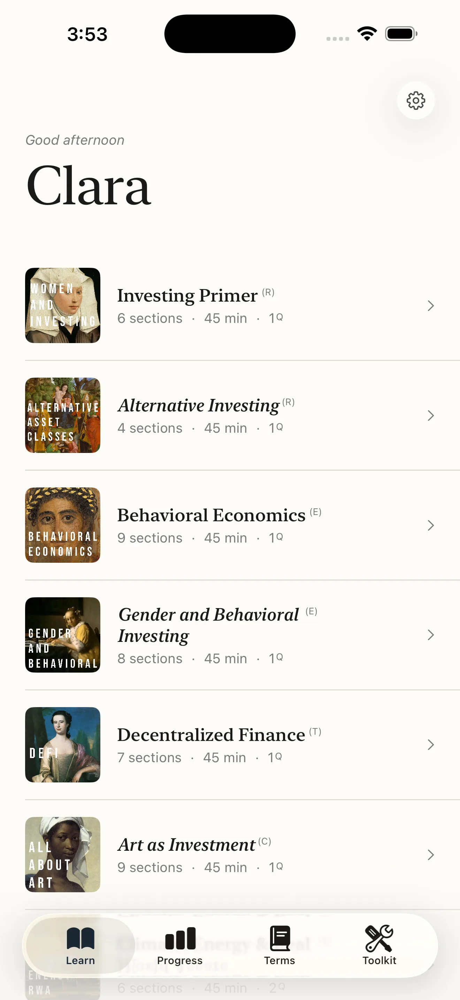
Inside the App
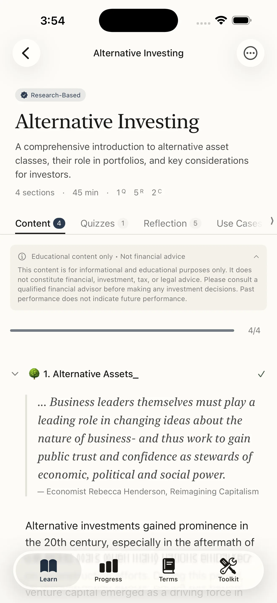
Research-backed content
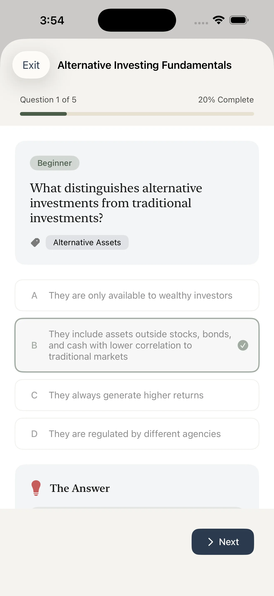
Knowledge checks
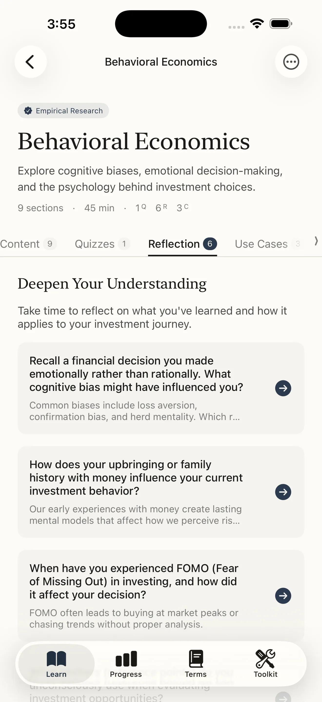
Reflection prompts
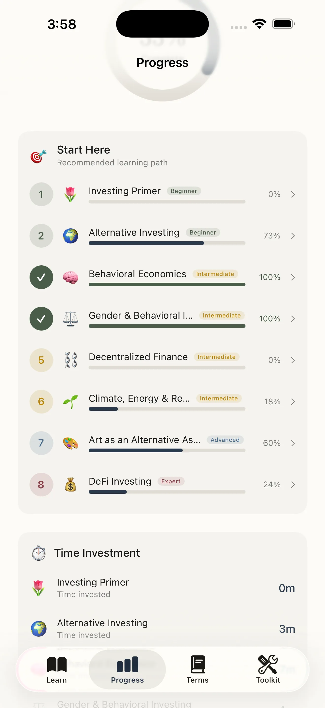
Learning path & progress
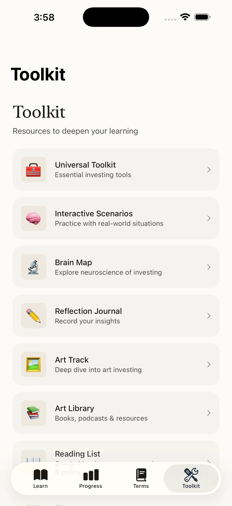
Toolkit & resources
Curriculum
The investing education that was never handed to you.
Nine modules. 351 terms. One app. Free to Start.
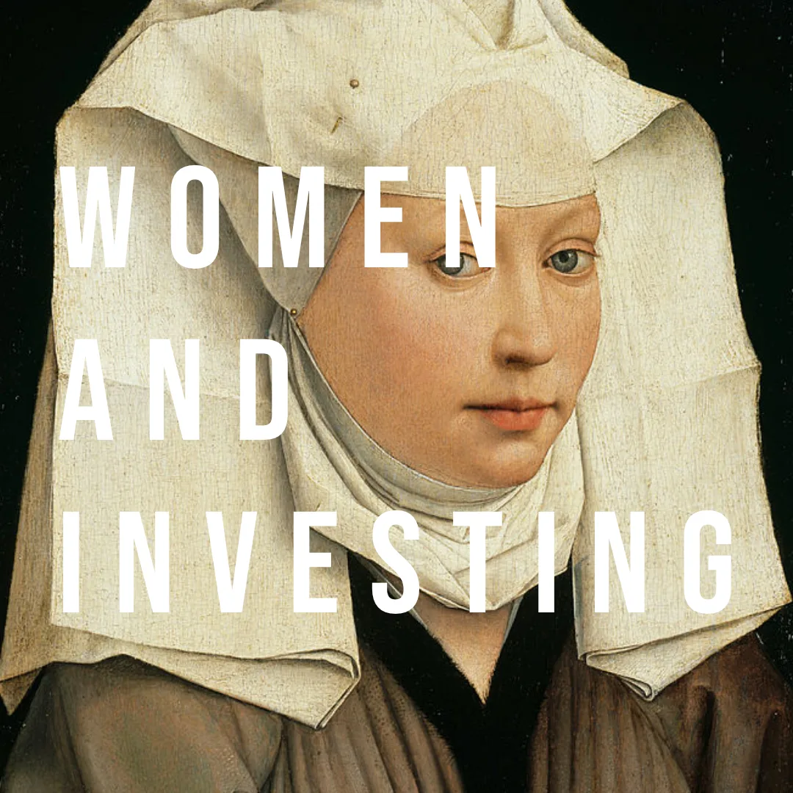
Investing Primer
Foundational investing concepts, risk frameworks, and how to build a personal investment thesis. Free for all users.
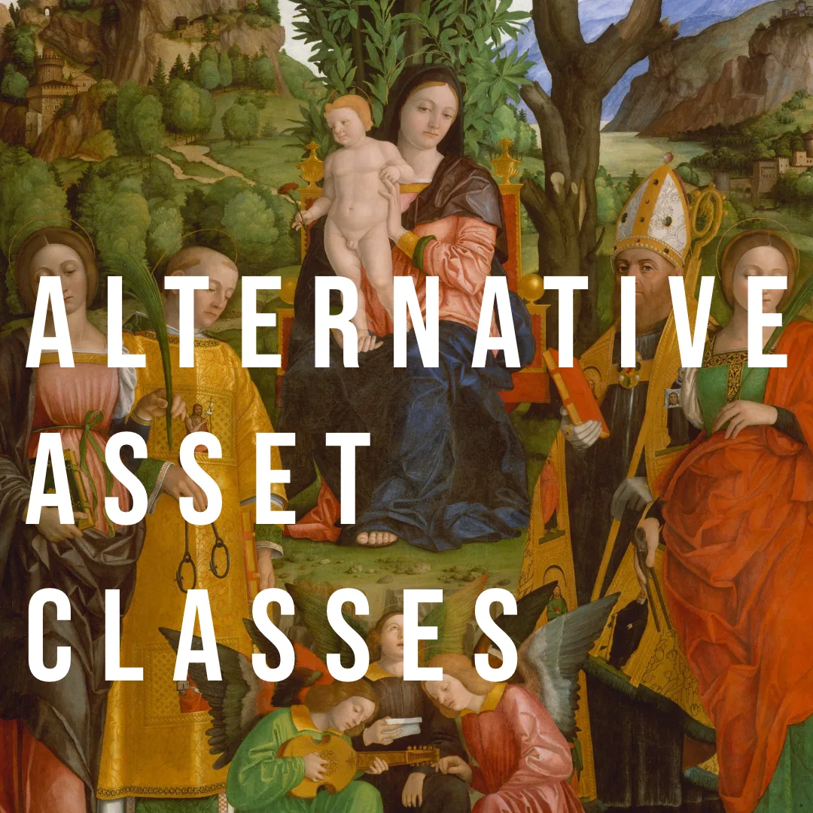
Alternative Asset Classes
Private equity, venture capital, hedge funds, real estate, commodities, and collectibles. Covers LP and GP structures, the J-curve, capital calls, carried interest, and how to evaluate a fund before committing capital.
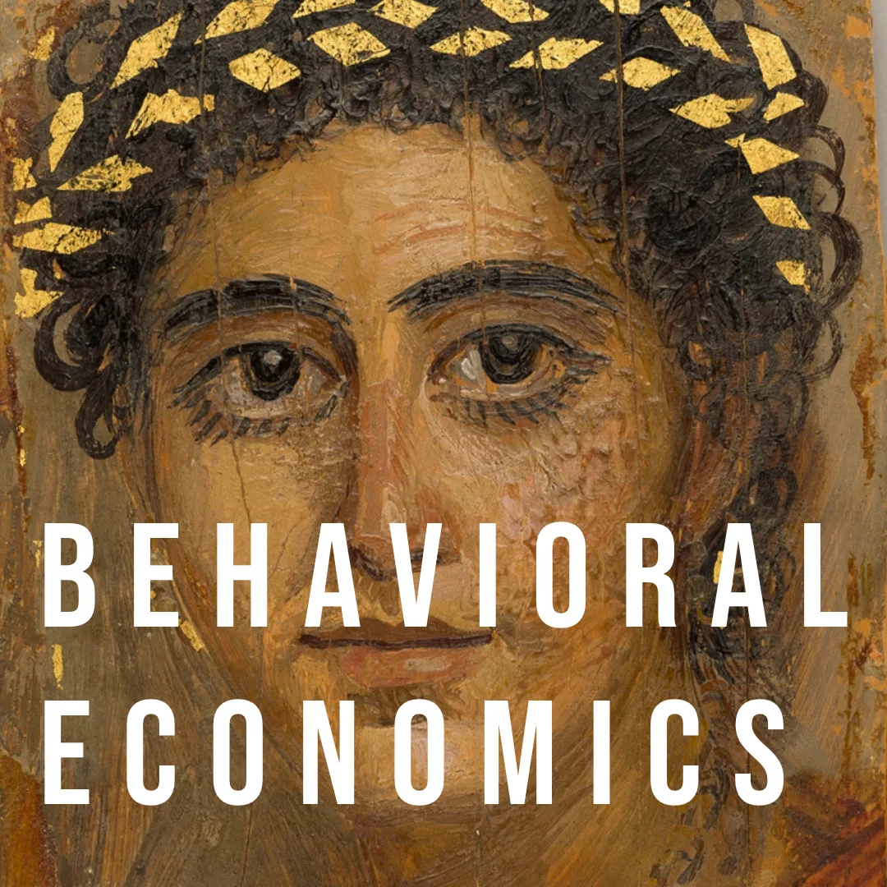
Behavioral Economics
Cognitive biases, emotional decision-making, and the neuroscience behind investment choices. Grounded in Kahneman, Tversky, and Thaler. Covers loss aversion, overconfidence, anchoring, confirmation bias, and the disposition effect.
Gender & Behavioral Investing
The data behind gender dynamics in markets, structural barriers women face in finance, the gender wealth gap, and how to apply a gender lens to a portfolio.
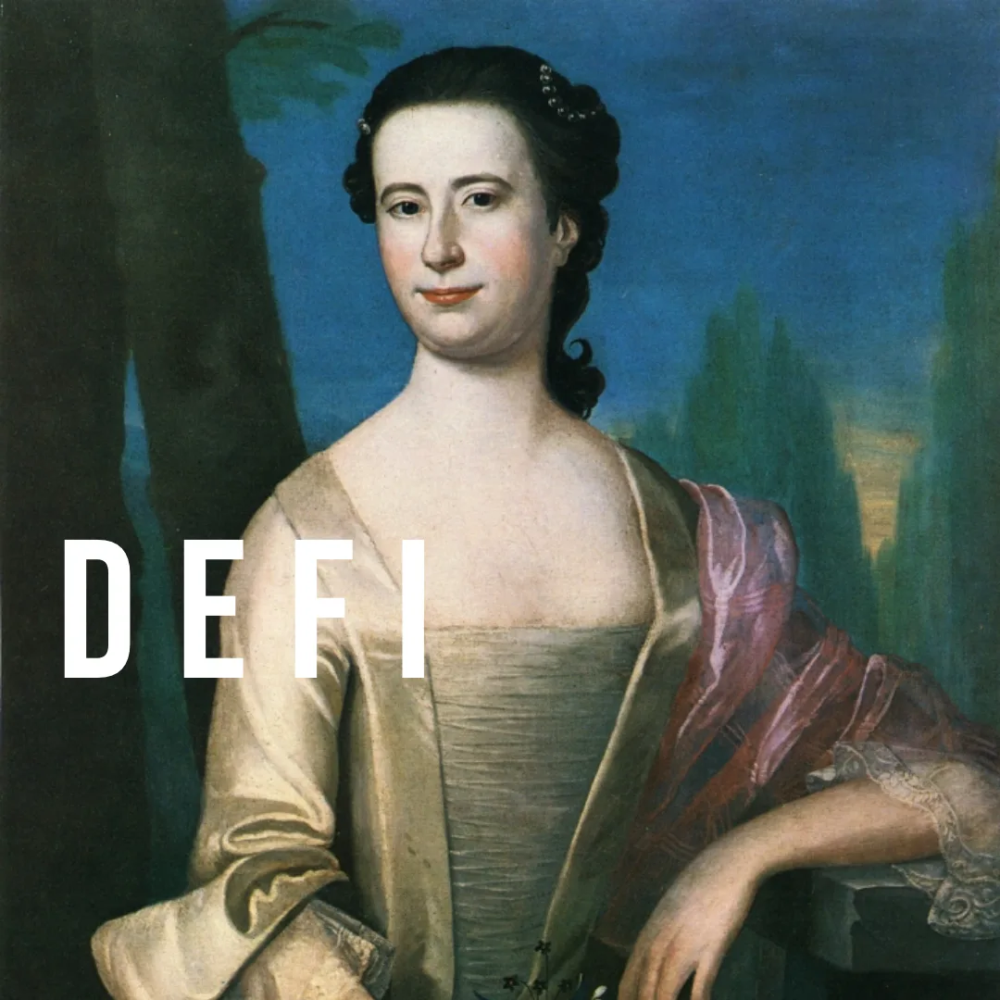
Decentralized Finance
Blockchain, smart contracts, stablecoins, DAOs, automated market makers, and CBDCs. Covers how DeFi differs from traditional finance, how to evaluate protocols, and the regulatory landscape including MiCA and OCC guidance.
Art as an Alternative Asset
Auction mechanics, provenance, authentication, fractional ownership, art-secured lending, and how artist estates influence market value.
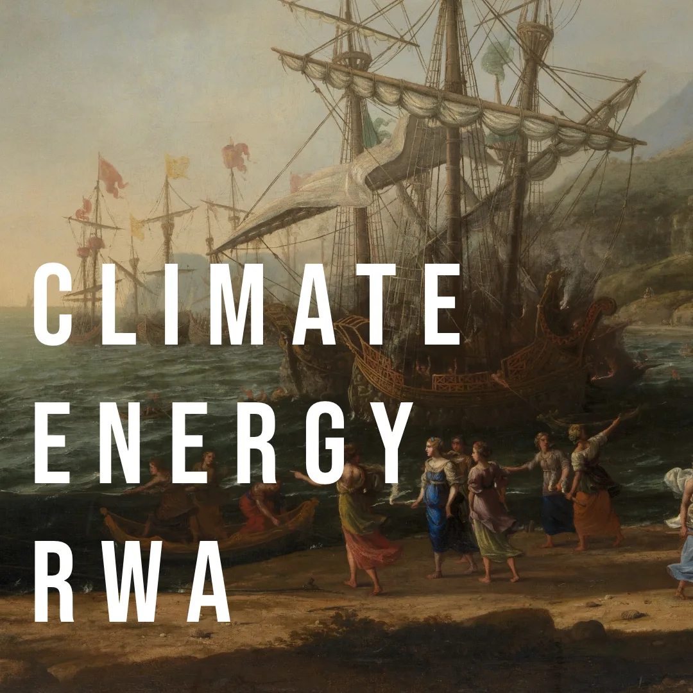
Climate, Energy & Real World Assets
ESG frameworks, green bonds, carbon credits, real-world asset tokenization, and how to distinguish genuine impact from greenwashing. Covers EU Taxonomy, TCFD, SFDR, and science-based targets.
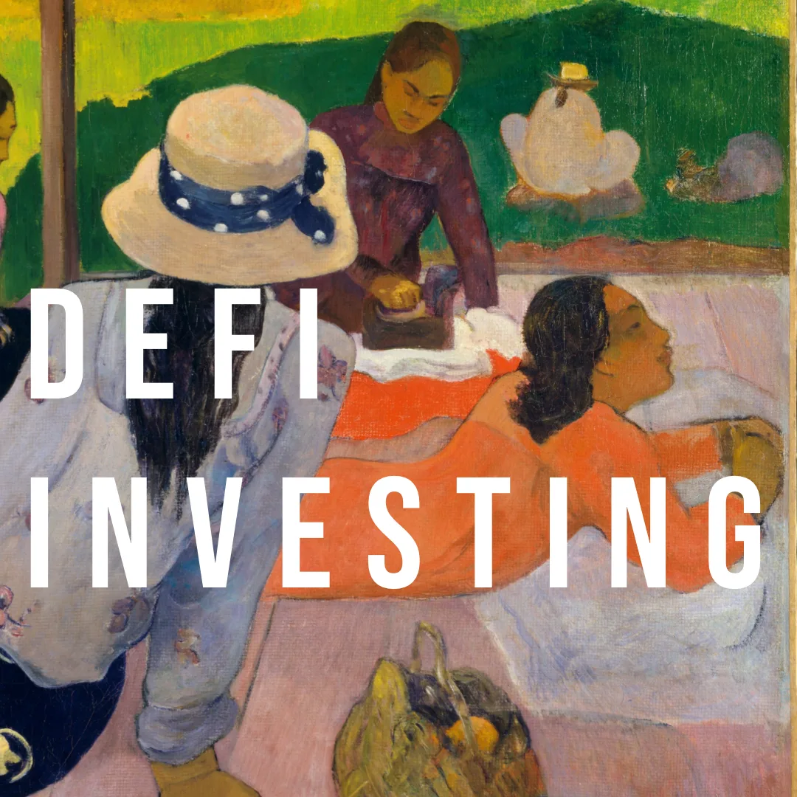
DeFi Investing
Protocol-level investing, staking, yield farming, liquidity provision, and risk management. Includes advisor Q&As for navigating DeFi conversations with wealth managers.
Kahlo × Basquiat
How Frida Kahlo and Jean-Michel Basquiat reshaped the art world and alternative asset markets. Examines how identity, race, and gender shape blue-chip art valuations.
BonusKnow Thyself
Seven interactive behavioral scenarios reveal your live patterns around overconfidence, loss aversion, and confirmation bias. Ten self-reflection categories — Motivation & Identity, Gender Lens, Risk Perception, Emotional Patterns, Choice Architecture, Generational Gains, Social Influence, Time & Patience, Investing Priorities, and Social Science Research — help you understand your own tendencies before making decisions. The Brain Map visualizes how four neurological regions shape your investing instincts.
Deep Dive Resources
351 searchable glossary terms across six categories — alternative assets, DeFi and crypto, art, ESG and climate, behavioral economics, and gender lens investing. A private reflection journal. A Portfolio Journal for tracking real investment decisions alongside your learning. Personal annotations — long-press any content block to highlight and add notes. An Advisor Share export that compiles your progress, reflections, journal entries, and annotations into a PDF for advisor meetings. A curated reading list with Apple Books links. An Art Library with books, podcasts, and digital resources. Research footnotes searchable by module.
Features
About
Introducing Alternative Asset Literacy — research-backed education for the asset classes that wealth conversations assume you already understand.
This application and all content are provided exclusively for educational and informational purposes. Nothing constitutes financial advice, investment advice, or any form of professional advisory service. Consult with a qualified financial advisor before making any investment decisions. Untitled_ LuxPerpetua Technologies, Inc. operates under SEC 506(c) and Regulation A Blue Sky Laws.
On the Artwork
All works are in the public domain, except where noted. Reproductions are used for educational purposes.
A Bouquet of Flowers
Clara Peeters was one of the rare female painters working in the Dutch and Flemish Golden Age — a period when women were largely excluded from the guild system that trained professional artists. Her still lifes of flowers, food, and objects are among the most technically precise of the era. This painting was chosen for two reasons: Peeters herself is a figure of overlooked creative agency, and the flowers she painted were at the center of one of history's first speculative asset bubbles. The Dutch Tulip Mania of 1636–37 — in which tulip bulb contracts reached extraordinary prices before collapsing — is a foundational case study in behavioral economics, market psychology, and the anatomy of a bubble. The painting sits at the intersection of art, finance, and the history of women in markets.
Public Secondary Education of Young Women
This bronze medal commemorates the Camille Sée Law of 1880, which established public secondary education for young women in France — one of the first formal legislative acts guaranteeing girls access to the same institutional education available to boys. Roty was among France's most celebrated medallists and is best known for designing the Semeuse (the sower), which appeared on French coins for over a century. The medal's Latin inscription reads: "The Republic teaches young women, future mothers of men." It depicts a woman teaching another woman — an image of knowledge passed between women, at a moment when that transmission was being institutionalized for the first time. This medal is the basis for the app icon.
Portrait of a Young Woman — Rogier van der Weyden, Flemish, c. 1460. Public domain.
A Lady Writing — Johannes Vermeer, Dutch, c. 1665. National Gallery of Art. Public domain.
Portrait d'une femme noire — Marie-Guillemine Benoist, French, 1800. Musée du Louvre. Public domain.
Portrait of a Young Woman in Red — Unknown artist, Roman Period, A.D. 90–120. Public domain.
Portrait of a Lady — John Singleton Copley (attr.), American, c. 1760s. Public domain.
The Siesta — Paul Gauguin, French, c. 1892–94. Public domain.
The Trojan Women Setting Fire to Their Fleet — Claude Lorrain, French, ca. 1643. Public domain.
Madonna and Child Enthroned with Saints — School of Ferrara, Italian Renaissance, c. early 16th century. Public domain.
Dos Mujeres (Two Women) — Frida Kahlo, Mexican, 1929. Used under fair use for educational purposes.